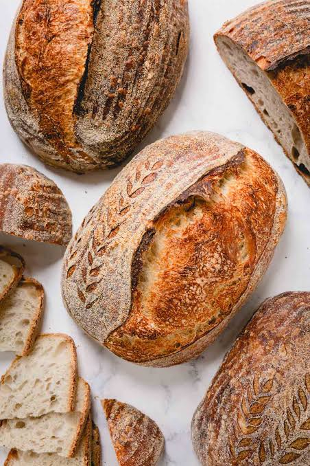

Roti Pagi Selasar berawal dari meja kecil di rumah, dan kebiasaan memanggang sebelum gang ramai.
Adonannya menginap semalam. Paginya dibentuk, dipanggang, lalu diantar selagi kulitnya masih renyah.
ROTISERI RUMAHAN · BANJARMADU, LAMONGAN
Fermentasi pelan, tepung pilihan, dan oven yang menyala sebelum matahari.
BATCH PAGI
Dibuat segar, jumlah terbatas.


CERITA DARI DAPUR
Roti Pagi Selasar berawal dari meja kecil di rumah, dan kebiasaan memanggang sebelum gang ramai.
Adonannya menginap semalam. Paginya dibentuk, dipanggang, lalu diantar selagi kulitnya masih renyah.
Kami percaya roti yang baik perlu waktu, bukan banyak bahan.
Nara & Dimas · pembuat roti
HAL YANG KAMI JAGA
CATATAN DARI PELANGGAN
CONTOH TESTIMONI · GANTI DENGAN ULASAN ASLI
“Wanginya sampai ke gang. Saya beli buat sarapan, tapi setengahnya habis di jalan.”
TANPA APLIKASI TAMBAHAN
Pesan langsung ke pembuatnya. Kami kabari kalau ada yang baru keluar dari oven.
Lihat menu dan tambahkan ke daftar pesanan.
Pesanmu tersusun otomatis untuk dicek dulu.
Sepakati waktu pengambilan langsung dengan kami.
DATANG SEBELUM HABIS
Ds. Banjarmadu, Kec. Karanggeneng
Kab. Lamongan
BATCH PAGI BERIKUTNYA DIMULAI JAM 04.00